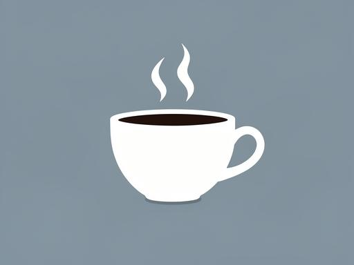

Italian flashcards for Anki
I made these flashcards with AI so you don’t have to. Every card has a picture and a recording of the word, and most have a short note or fun fact. They’re free to download.
About 2,900+ words and 5,200+ verb forms, in 22 decks.

masculine · plural: i caffè
Invariable: due caffè. Also means a café.
“Gradiresti un caffè? - Non a quest'ora.”
word for word: Would-you-like a coffee? - Not at this-hour.
— Benvenuti al Sud (2010), 0:26:14
Did you know? Order 'un caffè' in Italy and you get an espresso. Ask for a long milky coffee with a caffè latte. The word came via Ottoman Turkish kahve from Arabic qahwa.
How to use them
- Install Anki. It’s free on computers and Android. On iPhone the app is paid.
- Download a deck below.
- Open the file, or choose File → Import in Anki. The pictures and sound come with it.
Decks
Start here
New to Italian? Begin here.
-
Fluent Forever 625Download
The everyday basics: family, food, home, body, time. The best first deck.
1,194 cards · 9.7 MB -
NumbersDownload
The ones that trip everyone up (13 vs 30, 60 vs 70), from 0 up to a million.
108 cards · 967 KB
Words by level
Based on the CILS exam levels. Each level includes the levels below it, so you only need one.
-
Level A1 · BeginnerDownload
482 words for shopping, family, food and getting around.
960 cards · 7.7 MB -
Level A2 · ElementaryDownload
Everyday conversation: work, travel, health, plans. 563 new words, plus all of A1.
2,062 cards · 16.7 MB -
Level B1 · IntermediateDownload
Handle most situations, tell stories, give opinions. 502 new words, plus A1 and A2.
3,056 cards · 25.2 MB -
Level B2 · Upper-intermediateDownload
Follow films and news; argue a point with nuance. 541 new words, plus A1 to B1.
4,131 cards · 34.6 MB
Learn from a film
The words of a film, each with the line where it’s spoken and a word-for-word translation.
-
Le otto montagne (2022)Download
A drama. Italian to English.
1,546 cards · 14.0 MB -
Benvenuti al Sud (2010)Download
A comedy. Italian to English.
895 cards · 14.6 MB
The words Italians use most
Ranked by how often they appear in film and TV dialogue.
-
Most common verbs & nounsDownload
About 1,400 words, most useful first.
2,749 cards · 24.1 MB
Verbs, one tense at a time
Each card is one verb form, like “we will eat” → mangeremo.
-
PresentDownload
I eat, you eat, they eat.
700 cards · 6.8 MB -
Past · I have eatenDownload
The everyday past tense.
688 cards · 7.9 MB -
Past · I used to eatDownload
Habits and scenes from the past.
700 cards · 7.3 MB -
FutureDownload
I will eat.
700 cards · 7.4 MB -
Right nowDownload
I am eating (sto mangiando).
634 cards · 8.2 MB -
Commands · informalDownload
Eat! Come here! (to a friend)
100 cards · 1.5 MB -
Commands · politeDownload
Please sit. (to a stranger)
98 cards · 1.5 MB -
WouldDownload
I would eat.
700 cards · 7.8 MB -
Would haveDownload
I would have eaten.
688 cards · 8.9 MB -
Let’s…Download
Let’s eat!
98 cards · 1.6 MB -
Commands · to a groupDownload
Eat, everyone!
100 cards · 1.6 MB
Extra practice
Small decks for common stumbling blocks.
-
The little wordsDownload
il, la, un, del, nel, mio… in front of 3,000 real nouns. English → Italian only.
3,163 cards · 48.4 MB -
Words you already knowDownload
Italian words that look like English: generoso = generous.
255 cards · 4.7 MB
Good to know
- Many words appear in more than one deck. Each level deck includes the levels below it, so pick one level.
- The text, pictures and voices are all AI-generated, so some cards will have mistakes.
- The film decks quote lines from the films’ subtitles, with a word-for-word translation, for study.
- Please don’t sell the decks. Some of the data they’re built on doesn’t allow it (see the credits).